Model 1
Bekalan peralatan
Genset, gas train, panel dan pemulihan haba. Kerja awam oleh pelanggan atau kontraktor mereka.
Biogas ke kuasa
Loji biogas POME ialah satu rantaian, bukan satu mesin. Kualiti gas di salur masuk enjin menentukan sama ada anda mendapat 8,000 atau 4,000 jam antara baik pulih.
Rantaian proses
Pemilihan
Pada 60% CH₄ dan kecekapan elektrik 38–40%, satu meter padu biogas menghasilkan kira-kira 2.2 kWh elektrik.
| Output elektrik | Gas pada 60% CH₄ | Gas pada 55% CH₄ | Haba boleh pulih |
|---|---|---|---|
| 300 kW | 132 – 140 Nm³/h | 144 – 153 Nm³/h | 330 – 390 kW |
| 500 kW | 220 – 234 Nm³/h | 240 – 255 Nm³/h | 550 – 650 kW |
| 600 kW | 265 – 280 Nm³/h | 289 – 306 Nm³/h | 660 – 780 kW |
| 800 kW | 353 – 373 Nm³/h | 385 – 407 Nm³/h | 880 – 1,040 kW |
| 1,000 kW | 441 – 466 Nm³/h | 481 – 509 Nm³/h | 1,100 – 1,300 kW |
| 1,500 kW | 662 – 699 Nm³/h | 722 – 763 Nm³/h | 1,650 – 1,950 kW |
| 2,000 kW | 883 – 932 Nm³/h | 963 – 1,017 Nm³/h | 2,200 – 2,600 kW |
Angka beban penuh. Beroperasi di bawah 70% beban untuk jangka panjang menyebabkan pengumpulan karbon dan memendekkan selang baik pulih — pilih saiz lebih kecil atau dua unit.
Spesifikasi gas
Had ini menjadi asas perbincangan waranti dengan pembekal enjin. Jika gas anda tidak memenuhi, skop rawatan berubah — lebih baik kami nyatakan sebelum pesanan.
| Kandungan metana | ≥ 50% (design 55–65%) |
| H₂S di salur masuk enjin | ≤ 200 ppm, target ≤ 100 |
| Titik embun air | ≤ 10 °C above ambient |
| Suhu gas | ≤ 40 °C |
| Tekanan masuk | 5–15 kPa, ±1 kPa |
| Turun naik tekanan | ≤ 10% per minute |
Kesilapan paling biasa: menerima gas POME mentah pada 2,000–4,000 ppm H₂S. Ia memendekkan hayat minyak pelincir separuh dan menggandakan kos penyelenggaraan, tanpa disedari sehingga baik pulih pertama.
Ekonomi
600 kW pada 8,000 jam/tahun, gas 60% CH₄ selepas nyahsulfur:
| Item | RM/kWh |
|---|---|
| Minyak, penapis, palam pencucuh | 0.014 |
| Buruh servis rutin | 0.012 |
| Rizab baik pulih | 0.016 |
| Media nyahsulfur | 0.005 |
| Alat ganti, insurans, lain-lain | 0.008 |
| Jumlah | 0.055 |
Julat RM 0.048–0.058/kWh (≈ USD 0.011–0.014/kWh). Kontrak O&M penuh termasuk baik pulih: RM 0.065–0.085/kWh. Tidak termasuk O&M kolam dan peningkatan gas.
Rujukan Malaysia
Genset biogas Shengdong yang telah dipasang atau dalam penghantaran di Malaysia: 16.4 MW merentas 30 unit, 20 unit beroperasi sejak 2009-2013 dengan biogas POME. Foto dan butiran tapak daripada senarai rujukan pengeluar.
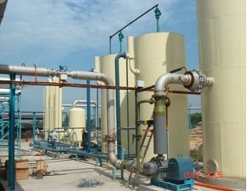
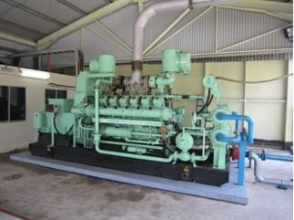
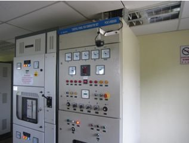
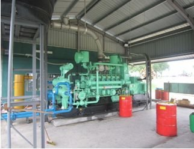
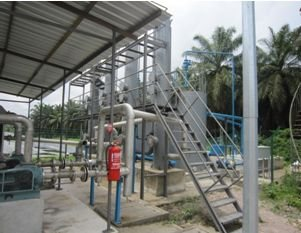
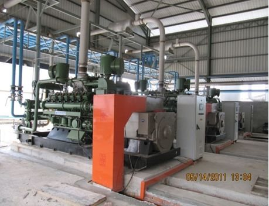
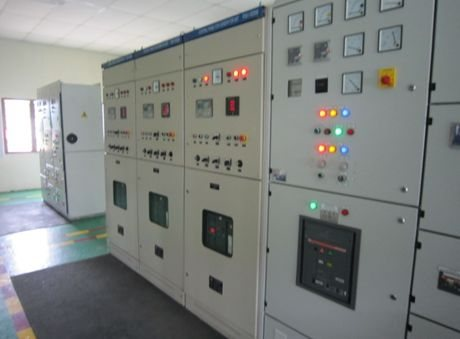
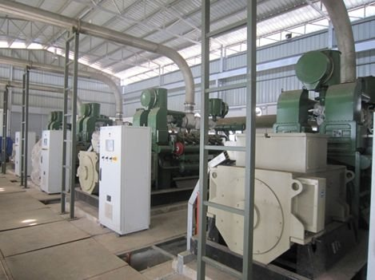
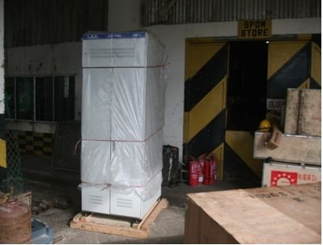
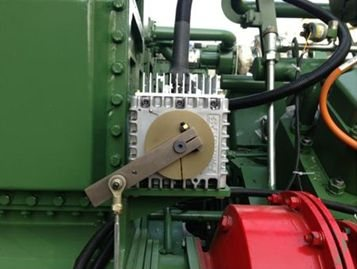
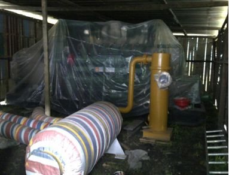
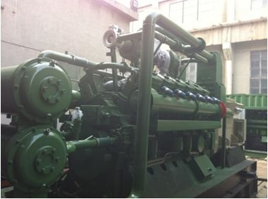
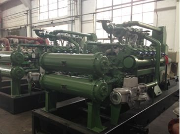
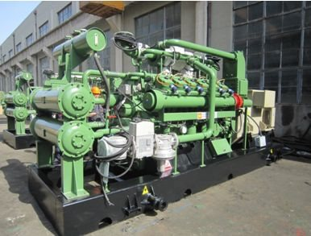
Jenama genset: Shengdong. Senarai rujukan dibekalkan oleh pengeluar. “Dalam pemasangan” dan “dihantar Mei” belum ditauliahkan.
Model komersial
Model 1
Genset, gas train, panel dan pemulihan haba. Kerja awam oleh pelanggan atau kontraktor mereka.
Model 2
Satu kontrak dari penutup kolam hingga sambungan grid, kerja tempatan di bawah CIDB dan pentauliahan disaksikan DOSH.
Model 3
Kami membiayai dan memiliki loji; kilang membeli kuasa atau gas pada harga diskaun berbanding kos semasa.
Sebelum sebut harga
Kami balas dengan imbangan gas, saiz unit dan bajet indikatif dalam tiga hari bekerja.